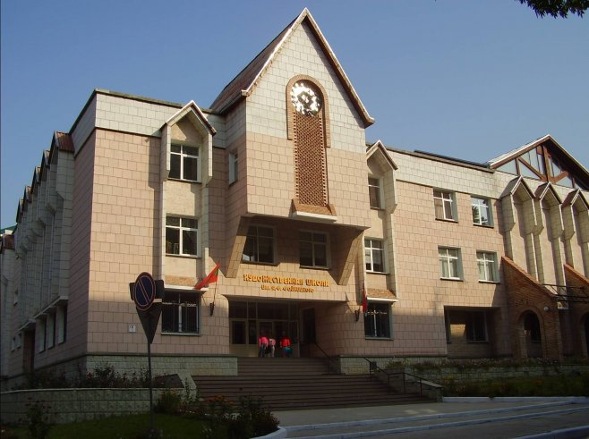

Учреждения доп.образования
Учреждения доп.образования в г.Тирасполь

МОУ ДО "ДМШ им. П.И.Чайковского"
В школе функционирует пять отделений: специального фортепиано; оркестровых инструментов; русских народных инструментов; общего фортепиано и аккомпанемента; музыкально-теоретических дисциплин и отдел сольного пения.
Учащиеся и преподаватели школы всегда находятся в центре культурной жизни города и республики, принимают активное участие в разнообразных концертных мероприятиях. Среди них: торжества, посвященные празднованию основания города Тирасполя и празднованию Великой Победы, творческие вечера композитора, народного артиста СССР Евгения Доги, концерты Государственного симфонического оркестра «Юные таланты Приднестровья»; концерты народного муниципального камерного оркестра Городского дворца культуры, городские фестивали детского творчества «Таланты твои, Тирасполь!» и «От сердца к сердцу», концерты оркестра Главного штаба Министерства обороны ПМР, концерты в рамках проекта «Метаморфозы» и многие другие.
МОУ ДО "Детская школа искусств им. С.В.Рахманинова"
Муниципальное образовательное учреждение дополнительного образования «Детская школа искусств имени С.В.Рахманинова» ведет свою историю от 1970 года. За 50 лет пройден огромный путь становления от вечерней школы общего музыкального образования до детской школы искусств. 1802 выпускника получили свидетельство об окончании школы за период ее существования. На сегодняшний день в школе более 800 учащихся, которые постигают азы изобразительного, музыкального и хореографического искусства. Большим успехом пользуются группы Раннего комплексного эстетического развития детей, группы подготовительного обучения по направлениям школы, курсы английского языка. Учебно-воспитательную деятельность осуществляют 80 педагогов, многие из которых носят почетное звание «Отличный работник культуры ПМР»,являются преподавателями высшей и первой квалификационных категорий. В школе успешно функционируют детские творческие коллективы - хоры старших, младших и первых классов, ансамбль аккордеонистов - баянистов, духовой ансамбль, эстрадный ансамбль. учебные хореографические коллективы. Учащиеся школы активно участвуют в фестивалях, конкурсах, олимпиадах городского, республиканского и международного уровня и многие их них становятся лауреатами и дипломантами. На сегодняшний день школа занимает одно из ведущих мест в республике среди других учреждений дополнительного образования.

МОУ ДО "Детская художественная школа им. А.Ф. Фойницкого"
МОУ ДО «Детская художественная школа им. А.Ф. Фойницкого» предоставляет классическое художественное образование в области изобразительного искусства по предметам: рисунок, живопись, скульптура, графика, декоративно-прикладное искусство, компьютерная графика, история ИЗО. Сроки обучения - 4 года и 6 лет. Детская художественная школа в городе Тирасполе была образована 20 ноября 1959 года Министерством культуры МССР. С 1975 года Детская художественная школа носит имя Александра Фёдоровича Фойницкого – художника, Почётного гражданина города Тирасполя, Заслуженного деятеля искусств МССР.
Главной задачей обучения в МОУ ДО «Детская художественная школа им. А. Ф. Фойницкого» является приобщение учеников к художественной культуре, обучение их основам изобразительной грамоты, воспитание их эстетического вкуса, а также выявление наиболее одарённых учащихся для продолжения художественного образования в средних специальных и высших учебных заведениях. По окончании выпускники получают свидетельство с правом дальнейшего профессионального образования в области изобразительного искусства.
Учреждения доп.образования в г.Бендеры
МОУ ДО «ДЕТСКАЯ ШКОЛА ИСКУССТВ»
В школе функционирует пять отделений: специального фортепиано; оркестровых инструментов; русских народных инструментов; общего фортепиано и аккомпанемента; музыкально-теоретических дисциплин и отдел сольного пения.
Целью деятельности школы является обучение детей, направленное на получение допрофессионального образования художественно-эстетического цикла.
МОУ ДО «ДЕТСКАЯ МУЗЫКАЛЬНАЯ ШКОЛА № 1»
Музыкальная школа осуществляет следующие виды образовательной деятельности - реализация образовательных программ по дополнительному образованию детей в сфере музыкального искусства по направлениям и специальностям: фортепиано, ударно-духовые инструменты; барабаны, труба, флейта, кларнет, тромбон, саксофон и др.; гитара (шестиструнная); молдавские народные инструменты; флуер, най, цимбал; оркестровые инструменты; скрипка, виолончель; народные инструменты - аккордеон, баян; музыкально-теоретические дисциплины – слушание музыки, сольфеджио, музыкальная литература; вокально-хоровые дисциплины.
В детской музыкальной школе работает 42 преподавателя. Высшее образование имеют - 29 преподавателей (79%), среднее специальное 13 преподавателей (21%). Высшую педагогическую квалификационную категорию имеют – 13 преподавателей (12%), I педагогическую квалификационную категорию имеют – 14 преподавателей (52%), II педагогическую квалификационную категорию - 15 преподавателей (16%).
Учреждения доп.образования в г.Рыбница
РЫБНИЦКАЯ ДЕТСКАЯ ХУДОЖЕСТВЕННАЯ ШКОЛА
Рыбницкая детская художественная школа всегда отличалась высоким уровнем преподавательского профессионализма, творческим новаторством и являлась отличной «кузницей» подготовки детей в начальном профессиональном образовании. Ведущими дисциплинами в школе являются рисунок, живопись, станковая и декоративная композиция, скульптура и история искусств. Занятия по рисунку и живописи ведутся в русле единой методики, основу которой составляет академическая школа. Учащиеся достигают высоких показателей в творческой учёбе и это подтверждается многочисленными победами в Республиканских и международных конкурсах, выставках.
Функции учреждения, предоставляемые услуги: эстетическое воспитание, художественное развитие личности, реализация дополнительных образовательных программ для раскрытия способностей, творческого мышления, удовлетворения национально-культурных запросов населения и оказания услуг в интересах личности, общества, республики.
МОУ ДО «Рыбницкая детская музыкальная школа им. Ю. Гагарина»
Направления деятельности: музыкальное (фортепиано, скрипка, гитара, медные и духовые инструменты, баян, аккордеон, сольное пение ( вокал )
— отбор детей, имеющих склонности и способности к обучению в избранной области искусства, давать учащимся общее эстетическое образование, воспитывать вкус на лучших образцах современного, классического, русского и зарубежного искусства;
— организация систематического учебного процесса, создание необходимых условий для личностного развития, художественно-эстетического воспитания и профессионального самоопределения детей в возрасте преимущественно от 6 до 18 лет.

МОУ ДО «Рыбницкая детская школа искусств»
Важнейшим направлением своей работы школа считает обеспечение реальных условий эффективного развития и обучения детей, обладающих способностями, для дальнейшего получения профессионального образования в области музыкального, художественного и хореографического искусства, а также формировать у учащихся в процессе обучения умение приобретать и творчески применять полученные навыки и знания. Платных услуг школа не предоставляет.
Педагогический коллектив состоит из 33 преподавателей, и обучаются в школе 330 учащихся. В школе искусств существует три отделения – музыкальное, хореографическое и отделение ИЗО. Музыкальное отделение подразделяется на следующие отделы: фортепианный, струнный, народный, духовой..
Учреждения доп.образования в г.Дубоссары

Музыкальная школа имени Г. Мургу с памятником Ленину
Исполком Дубоссарского Совета народных депутатов 15 апреля 1955 года принял решение открыть детскую музыкальную школу в городе Дубоссары. В июне того же года началось формирование первого набора учащихся. Первыми преподавателями работало всего 4 педагога (Борис Григорьевич Шехтман, Павел Григорьевич Головко , Михаил Евгеньевич Гуцан, Исай Пантелеевич Гынку), а набор составил 15 человек. Директором музыкальной школы был назначен Борис Григорьевич Шехтман. Открытая в послевоенные годы, школа сразу стала центром культурной жизни города, глотком чистого воздуха, местом культурного развития горожан. Школа располагалась в двухэтажном здании по улице Ломоносова, 10, в ней функционировали 2 отделения — дневное и вечернее.
МОУ ДО «ДУБОССАРСКАЯ ДЕТСКАЯ ХУДОЖЕСТВЕННАЯ ШКОЛА»
С момента образования и до 2017 г. было проведено 50 выпусков. Свидетельства об окончании школы получили уже 1380 учащихся. В настоящее время выпускники учатся в СУЗах и ВУЗах ПМР, Молдовы, России, Украины, Румынии, Чехии, США и Белоруссии и других стран. В школе накоплен большой выставочный фонд работ учащихся – около 2000 работ. Ежегодно в нашем городе и за его пределами проводятся экспозиции работ, выполненные в разные годы учениками нашей школы.
Учащиеся нашей школы участвуют в различных школьных, городских, Республиканских и международных конкурсах, где занимают призовые места.
За многолетнюю историю школа зарекомендовала себя как центр изобразительного искусства города Дубоссары, где много лет получают высокую предпрофессиональную подготовку учащиеся, что способствует совершенствованию культурного и эстетического развития нашего города.


Дворец детско-юношеского творчества г. Дубоссары
Дворец Детско - Юношеского творчества (бывший Дом пионеров) был создан 26 октября 1951 года. Первым директором ДП была Нина Анатольевна Стрий. Размещался ДП в небольшом здании по ул. Дзержинского. С 1979 года Дом пионеров скитался по старым зданиям и подвалам.
Дворец Детско - Юношеского творчества (бывший Дом пионеров) был создан 26 октября 1951 года. Первым директором ДП была Нина Анатольевна Стрий. Размещался ДП в небольшом здании по ул. Дзержинского. С 1979 года Дом пионеров скитался по старым зданиям и подвалам.
Учреждения доп.образования в г.Каменка

КАМЕНСКАЯ ДЕТСКАЯ ХУДОЖЕСТВЕННАЯ ШКОЛА
В отличие от общеобразовательных школ, учебный год разделён не на четверти, а на два полугодия. В конце каждого полугодия (начало января и конец мая) проводится итоговый просмотр каждого класса, где аттестационная комиссия в составе из администрации школы и преподавателей оценивает проделанную работу за прошедшее время. Обучающиеся, освоившие в полном объёме образовательные программы, переводятся в следующий класс.
В школе стали традиционными выставки творческих работ учащихся, экспозиции, подготовленные преподавателями. Детские рисунки выполняются в разных техниках - масляная живопись, гуашь, пастель, акрил, витраж, батики в смешанных техниках. В работах учащихся отображается колорит родного края, жизненная правдивость, фольклорной свежестью привлекают работы некоторых учеников, в них ощутимо личное восприятие ученика, индивидуальный почерк. Это и понятно: Каменка - туристический и курортный город, богатый своей историей и расположенный в живописном уголке Приднестровья, где сам воздух пронизан особым лиризмом.
КАМЕНСКАЯ ДЕТСКАЯ ШКОЛА ИСКУССТВ
Муниципальное образовательное учреждение дополнительного образования «Каменская детская школа искусств» ( ранее Каменская детская музыкальная школа) образована по решению исполкома городского Совета в 1969 году. Распологалась по адресу ул.Кирова 266 в здании районного Дома культуры на 2-ом этаже.
Основной целью Каменской детской школы искусств является эстетическое воспитание, музыкальное развитие личности, реализация дополнительных образовательных программ для раскрытия способностей, творческого мышления, для удовлетворения национально-культурных запросов населения.


ДЕТСКАЯ ХУДОЖЕСТВЕННАЯ ШКОЛА С. РАШКОВО
Целью работы ДХШ является начальное художественное образование, включающее в себя эстетическое воспитание, развитие творческого мышления, создание необходимых условий для художественного творчества, личностного роста и профессионального самоопределения учащихся.
Много ярких индивидуальностей открыла РДХШ. Среди выпускников школы работают и продолжают художественную деятельность в различных направлениях: Леонтьев Иван – в г.Киев, Хомицкая Татьяна в Канаде, Бдрашко Татьяна и др.
Учреждения доп.образования в г.Григориополь

МОУ ДО «ШКОЛА ИСКУССТВ ИМ. Т. ГУРТОВОГО»
Григориопольская Детская Музыкальная школа была образована в 1968 году (Приказом Министерства культуры МССР № 283 от 07.06.1968года) и находилась в подчинении районного отдела культуры Дубоссарского района. С первых лет образования в школе обучалось 35 детей, которые занимались на фортепианном и народном отделах, а также в духовом и скрипичном классах. Позже открылся класс гитары.
На музыкальном отделении учащиеся обучаются игре на фортепиано, скрипке, баяне, аккордеоне, гитаре, трубе, саксофоне, а также вокальному искусству эстрады и классическому вокалу. В соответствии с учебным планом изучают теоретические дисциплины: сольфеджио, музыкальную литературу, слушание музыки, историю искусств. Ученики совершенствуют исполнительское мастерство в ансамблях, посещают хор. Ученики хореографического отделения изучают основы народного, классического, современно-бального и эстрадного танца. Учащиеся художественного отделения посещают предметы «Живопись», «Скульптура», «Рисунок», «Композиция», изучают историю изобразительного искусства.
Учреждения доп.образования в г.Днестровск

МОУ ДО «ДЕТСКАЯ ШКОЛА ИСКУССТВ» Г. ДНЕСТРОВСК
МОУ ДО "Детская школа искусств" г. Днестровск предлагает обучение на музыкальных и художественных отделениях. На музыкальном отделении работают классы фортепиано, скрипки, виолончели, аккордеона, баяна и вокала. Художественное отделение обучает основам живописи, рисунка, композиции, изучает историю искусства.
Помимо этих отделений, с 2013 года в ДШИ существует коммерческий проект, созданный как для дошкольников, так и для взрослых. В ДШИ работает высокопрофессиональный педагогический коллектив, из которого большинство преподавателей когда-то сами учились в стенах школы.
Учреждения доп.образования в г.Слободзея
Слободзейская детская музыкальная школа
Отсчет своей истории детская музыкальная школа берет в 1959 году, когда в Слободзее открылось музыкальное училище, одновременно с ним и детская школа.
Важную роль в становлении школы сыграл первый директор Александр Плеян. Он возглавлял школу более 25 лет. Создал очень крепкий коллектив. Некоторые преподаватели работают до сих пор в школе. Их стаж составляет 42-45 лет. За эти годы школа выпустила более тысячи выпускников. Сегодня в уютных классах занимаются 120 юных слободзейцев. У школы есть филиалы в поселке Красное, селе Чобручи. Детей учат играть на фортепиано, скрипке, духовых инструментах. В последние годы функционирует отделение вокального сольного пения.Как рассказала директор учреждения Светлана Вуколова, дети пытаются освоить согласно программе несколько инструментов. «Занимаясь, скажем, в классе фортепиано, они дополнительно выбирают скрипку для того, чтобы охватить еще какой-нибудь инструмент, расширить свой кругозор, свои навыки и умения»- отметила Светлана Ивановна.
МОУ ДО «ДЕТСКАЯ ХУДОЖЕСТВЕННАЯ ШКОЛА Г. СЛОБОДЗЕЯ»
Де́тская музыка́льная шко́ла — музыкальное учебное заведение, в котором дети школьного возраста в свободное от уроков в общеобразовательных школах время дополнительно получают начальные музыкальные знания и навыки. Прививается умение играть в ансамбле, аккомпанировать, сочинять и импровизировать. Преподаются и теоретические дисциплины, такие как сольфеджио и музыкальная литература. Дополнительно могут преподаваться музыкальное моделирование, основы компьютерной аранжировки и запись нотного текста. Занятия по игре на инструменте («по специальности») педагог проводит с каждым учеником индивидуально. Поступление в музыкальную школу предполагает прохождение конкурсного отбора. Распространенной практикой является приглашение к ребенку частного учителя на 1-2 часа в неделю примерно в течение года перед планируемым поступлением для минимальной стартовой подготовки. Во всех музыкальных школах есть также подготовительные классы, где также можно подготовиться к поступлению на основной курс школы.